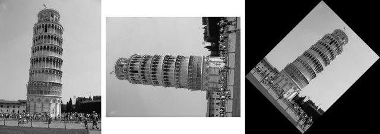
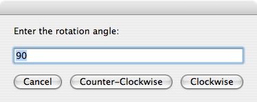

Rotating an Image
From the Image Events dictionary:
rotate v : Rotate an image
rotate (reference): the object for the command
to angle (real): rotate using an angle
The rotate command is used to rotate an image clockwise around its center point. The value for the to angle parameter is a positive integer from 1 to 359.
To convert a negative rotation angle (counter-clockwise values), such as -90, to a positive value, add 360:
-90 + 360 = 270
NOTE: Images rotated to values other than 90, 180, or 270 will have their “non-image” areas padded with black pixels to maintain the resulting image shape as a rectangle.
To rotate an image, follow the same steps as the script used to flip an image.

set this_file to choose file
try
tell application "Image Events"
-- start the Image Events application
launch
-- open the image file
set this_image to open this_file
-- perform action
rotate this_image to angle 270
-- save the changes
save this_image with icon
-- purge the open image data
close this_image
end tell
on error error_message
display dialog error_message
end try

Use of the roate command. (L to R) Normal, rotated 270 degrees or -90 degrees (90 degress counter-clockwise), rotated 45 degrees (note the automatic padding of the space around the rotated image).
Example Accepting User Input
 will allow the user to enter the rotation information when the script is executed:
will allow the user to enter the rotation information when the script is executed:

set this_file to choose file without invisibles
set the rotation_angle to 90
repeat
display dialog ¬
"Enter the rotation angle:" default answer rotation_angle ¬
buttons {"Cancel", "Counter-Clockwise", "Clockwise"}
copy the result as list to {rotation_angle, rotation_direction}
try
set rotation_angle to rotation_angle as number
if the rotation_angle is greater than 0 and ¬
the rotation_angle is less than 360 then
if the rotation_direction is "Counter-Clockwise" then
set the rotation_angle to 360 - the rotation_angle
end if
exit repeat
end if
on error
beep
end try
end repeat
try
tell application "Image Events"
-- start the Image Events application
launch
-- open the image file
set this_image to open this_file
-- perform action
rotate this_image to angle rotation_angle
-- save the changes
save this_image with icon
-- purge the open image data
close this_image
end tell
on error error_message
display dialog error_message
end try